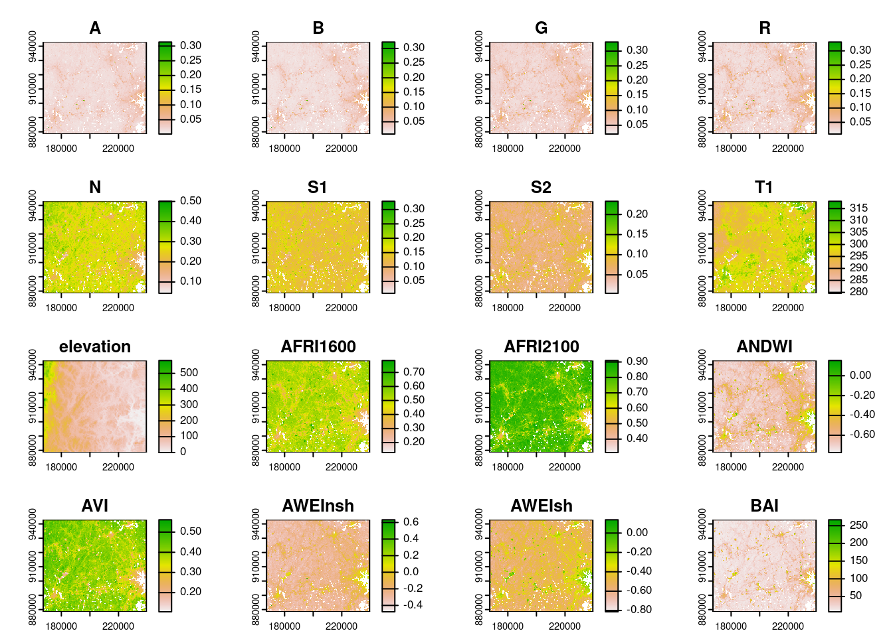

ma_counties <- tigris::counties("MA", progress_bar = FALSE)
middlesex <- ma_counties[ma_counties$NAME == "Middlesex", ]
# Reprojecting into the MA state plane, a planar CRS:
middlesex <- sf::st_transform(middlesex, 26986)
plot(sf::st_geometry(middlesex))I am so, so excited to share that rsi,1 a new R package for handling common spatial data wrangling tasks, is now available on GitHub! Specifically, rsi handles:
- Downloading data from STAC APIs (using some of the tricks I wrote about in the STAC R tutorials),
- Computing indices from the Awesome Spectral Indices project using that imagery,
- And a handful of other spatial data wrangling problems, including merging multiple bands into a single VRT file.
Most of my work on the package happened while I was at Permian Global, helping them automate their MMRV pipelines used to make sure their carbon credit projects are actually preserving carbon sinks and have additive benefits over time.2 I’m really excited and grateful that Permian has agreed to open-source this work.
Let’s take a whirlwind tour through the features in this package! For the purposes of this blog post, let’s download and process imagery for Middlesex county in Massachusetts, USA.3 We’ll use the tigris package to get the borders for this county, and then reproject it into the Massachusetts State Plane:
This is the area we’re going to download and process data for.
Specifically, let’s start off by downloading Landsat imagery from Microsoft’s Planetary Computer STAC API! This is pretty straightforward using rsi: use the get_landsat_imagery() function with an area of interest and a timeframe, and you’ll automatically get a cloud-masked composite image of all acquisitions for that spatiotemporal window. Let’s grab all the imagery from September 2023:
library(rsi)
future::plan("multisession")
middlesex_imagery <- get_landsat_imagery(
middlesex,
"2023-09-01",
"2023-09-30"
)
middlesex_imagery[1] "shell_liquid_doctor.tif"Note that I’ve used future::plan() here to specify a parallelization methodology, as the data retrieval functions in rsi are all compatible with future4 to speed up downloads by using multiple threads. These functions also use progressr to let users specify progress reporting methods, if they want them, by calling progressr::handlers().
By default, get_landsat_imagery() will download a composite of all bands available in Landsat 8 and 9 imagery for our timeframe:
terra::rast(middlesex_imagery) |>
terra::plot()Notice that this composite has been cloud-masked (using the QA pixel band) and rescaled5 (using the scale and offset specified in metadata provided by the STAC endpoint) automatically. You can control these behaviors via function arguments.
We’re able to download more than just imagery via rsi functions – for instance, we could also grab a DEM for this area from Planetary Computer, using the get_dem() function:
middlesex_dem <- get_dem(middlesex)
terra::rast(middlesex_dem) |>
terra::plot()Under the hood, both of these functions (and their friends, get_sentinel2_data() and get_sentinel1_data()) are powered by a lower-level get_stac_data() function, which should theoretically work with any imagery provided by any STAC API, anywhere. These functions simply provide user-friendly defaults to make it faster to get the data you care about.
In addition to these STAC-focused data-downloading functions, rsi also has an interface to the Awesome Spectral Indices project, via the spectral_indices() function:
spectral_indices() |>
head()# A tibble: 6 × 9
application_domain bands contributor date_of_addition formula long_name
<chr> <list> <chr> <chr> <chr> <chr>
1 vegetation <chr [2]> https://githu… 2021-11-17 (N - 0… Aerosol …
2 vegetation <chr [2]> https://githu… 2021-11-17 (N - 0… Aerosol …
3 water <chr [6]> https://githu… 2022-09-22 (B + G… Augmente…
4 vegetation <chr [2]> https://githu… 2021-09-20 (1 / G… Anthocya…
5 vegetation <chr [3]> https://githu… 2022-04-08 N * ((… Anthocya…
6 vegetation <chr [4]> https://githu… 2021-05-11 (N - (… Atmosphe…
# ℹ 3 more variables: platforms <list>, reference <chr>, short_name <chr>This function attempts to grab the newest version of the spectral indices JSON file from the ASI repo, and then stores that data in a cache folder on your computer. If the downloading fails, the package will fall back (with a warning) to use your possibly outdated cache instead; if you don’t have a cache and can’t download the files, the package will instead (with a different warning) resort to using a packaged version of the indices file. This ensures that you’re always getting the latest and greatest version of the ASI list possible, but that the package can still be used without an internet connection.
There are also functions in rsi to sort through the ASI list of indices. For instance, the filter_platforms() function can be used to, well, filter the list to only indices that can be calculated from a given platform. For instance, to filter to only indices that can be calculated using data from Landsat’s Operational Land Imager:
filter_platforms(platforms = "Landsat-OLI") |>
head()# A tibble: 6 × 9
application_domain bands contributor date_of_addition formula long_name
<chr> <list> <chr> <chr> <chr> <chr>
1 vegetation <chr [2]> https://githu… 2021-11-17 (N - 0… Aerosol …
2 vegetation <chr [2]> https://githu… 2021-11-17 (N - 0… Aerosol …
3 water <chr [6]> https://githu… 2022-09-22 (B + G… Augmente…
4 vegetation <chr [4]> https://githu… 2021-05-11 (N - (… Atmosphe…
5 vegetation <chr [4]> https://githu… 2021-05-14 sla * … Adjusted…
6 vegetation <chr [2]> https://githu… 2022-04-08 (N * (… Advanced…
# ℹ 3 more variables: platforms <list>, reference <chr>, short_name <chr>There’s an equivalent function to filter indices based upon the bands that require. For instance, we can filter the list to only indices that use the red and blue band of images:
filter_bands(bands = c("R", "B")) |>
head()# A tibble: 2 × 9
application_domain bands contributor date_of_addition formula long_name
<chr> <list> <chr> <chr> <chr> <chr>
1 vegetation <chr [2]> https://githu… 2022-04-08 (R - B… Kawashim…
2 vegetation <chr [2]> https://githu… 2022-04-08 (R^2.0… Modified…
# ℹ 3 more variables: platforms <list>, reference <chr>, short_name <chr>Arguments to these functions let you control whether you’re looking for indices that match all platforms and bands you’ve specified, or any of them.
But rsi doesn’t simply make these formulas available in R, it also helps you compute these indices from imagery, via the calculate_indices() function. This function takes your imagery and a subset of spectral_indices() as arguments, and creates a raster containing all of those indices as an output. We can use filter_bands() to quickly get a list of the indices we can compute from our Landsat imagery, and then calculate_indices() to compute all 128 of those indices from our images:
middlesex_indices <- calculate_indices(
middlesex_imagery,
filter_bands(bands = names(terra::rast(middlesex_imagery))),
"middlesex_indices.tif"
)
|---------|---------|---------|---------|
=========================================
terra::rast(middlesex_indices) |>
terra::plot()Note that calculate_indices() is evaluating the formulas in the formula column of the spectral indices data frame as if they were code.6 These formulas are evaluated inside of a very limited environment, which doesn’t have access to the global environment or most R fixtures, which does reduce the amount of harm malicious code could do:
evil_index <- spectral_indices()[1, ]
evil_index$formula <- "system('echo OHNO')"
try(
calculate_indices(
middlesex_imagery,
evil_index,
"test.tif"
)
)Error in system("echo OHNO") : could not find function "system"But it’s worth scanning your formulas before running calculate_indices(), just to make sure you aren’t going to be accidentally running something surprising!
Last but not least, rsi also provides a way to combine disparate data sets covering the same geographic region into a single VRT, quickly creating a file that you can treat as a single raster without taking up much additional storage space. This is a great way to create predictor bricks from your indices and downloaded data7 which you can then use for model fitting and prediction:
combined_layers <- stack_rasters(
c(middlesex_imagery, middlesex_dem, middlesex_indices),
"middlesex.vrt"
)
terra::rast(combined_layers) |>
terra::plot()
I’m extremely excited for this package to be out in the open, and for people to start using it. If you find the package useful or interesting, drop us a star on GitHub – and if you have any questions/comments/concerns about how it does things, please open an issue or a PR! We’re planning a CRAN release in the not-too-distant future, and would love to incorporate any feedback we get into that first released version.
Footnotes
The name is a nonsense acronym. Initially the package was going to be “rsi: An R interface to the Rsome Spectral Indices project”, but the scope very quickly outgrew that; now it’s a convenient short package name that’s not taken on CRAN, and I’m backronyming as many additional meanings into those three letters as I can make fit.↩︎
I am not currently employed by Permian, and nothing I say here or elsewhere reflects their opinions! That said, Permian is a copyright holder and funder to rsi, just as Posit is to waywiser, given their support of the initial development of the package.↩︎
I was originally going to use Boston’s Suffolk county, but Suffolk county’s borders are ludicrous, because they include not just Boston’s mainland but also Boston’s islands, meaning the county is a normal-enough shape with a huge rectangle extending into the Atlantic off to the East.↩︎
Via future.apply, to be specific.↩︎
Explaining this blog post from a few months ago.↩︎
Explaining this blog post from two days ago.↩︎
Not that you should be regressing using raw imagery bands, but this lets you combine a DEM and other computed metrics with calculated indices.↩︎